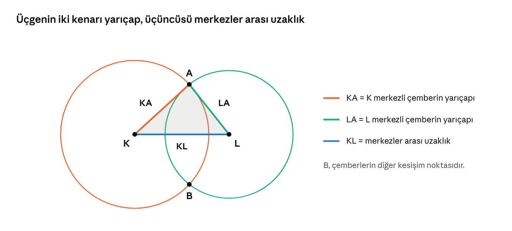

Kesişen Çemberlerle Üçgen İnşa Ediyorum (MAT.5.3.7)
Öğretmen İçin: Kazanım ve Süreç
Bu materyal, öğrencinin iki kesişen çemberle üçgen kurup kenarları yarıçaplar üzerinden karşılaştırarak üçgen türünü kendisinin keşfetmesi için hazırlandı. Kural en başta verilmez; öğrenci önce çizer, sonra tahmin eder, en son genelleme yapar.
Bilgi | Ayrıntı |
|---|---|
Öğrenme çıktısı | MAT.5.3.7. Matematiksel araç ve teknoloji yardımıyla düzlemde iki noktada kesişen çember çiftinin merkezleri ve kesişim noktalarından biri ile inşa edilen üçgenlerin kenar özelliklerine yönelik çıkarım yapabilme |
Süre | 3 ders saati (+ 2 saat okul temelli planlama) |
Süreç bileşeni a | Varsayımda bulunur → Bölüm 2 "Tahmin Et" kutuları, Çalışma Kâğıdı Etkinlik 1 |
Süreç bileşeni b | Çeşitkenar, ikizkenar, eşkenar üçgenleri belirler → Etkinlik 2 tablosu ve Etkinlik 3 |
Araç-gereç | Pergel, ölçüsüz cetvel, kareli ve çizgisiz kâğıt; varsa GeoGebra (OB2) |
Değerler ve beceriler | SDB1.1, SDB1.2, OB2, OB4, D7.1, E3.3 |
Önerilen akış: 1. ders hatırlatma + Keşif 1–2 · 2. ders Keşif 3 + Etkinlik 1–2 · 3. ders Öklid'in birinci önermesi + Etkinlik 3–4 + öz değerlendirme.
Konu Anlatımı: Kesişen Çemberlerle Üçgen Kuruyorum
İki çemberin merkezlerini ve kesişim noktalarından birini birleştirince bir üçgen oluşur. Bu üçgenin kenarlarını ölçmeden, sadece çemberlere bakarak tanıyabiliriz. Nasıl mı? Birlikte keşfedelim.
Hatırlayalım
- Çember: Bir noktaya (merkeze) eşit uzaklıktaki noktaların oluşturduğu kapalı eğridir. Pergelin sivri ucu merkezi, açıklığı yarıçapı belirler.
- Yarıçap: Merkezi, çemberin üzerindeki bir noktaya birleştiren doğru parçasıdır.
- Üçgen çeşitleri (kenarlarına göre): Üç kenarı farklı uzunlukta → çeşitkenar · İki kenarı eşit → ikizkenar · Üç kenarı eşit → eşkenar.
ANAHTAR BİLGİ: Bir çemberin bütün yarıçapları birbirine eşittir. Bu konudaki her şey bu bilgiye dayanır!
Üçgenimizi Tanıyalım
Şekilde K ve L merkezli iki çember A ve B noktalarında kesişiyor. K, L ve A noktalarını birleştirince KLA üçgeni oluşur.

K ve L merkezli kesişen iki çember · KLA üçgeni
Bu üçgenin her kenarı "bir şeyin" uzunluğudur:
Kenar | Aslında nedir? |
|---|---|
KA | K merkezli çemberin yarıçapı |
LA | L merkezli çemberin yarıçapı |
KL | İki merkez arasındaki uzaklık |
HATIRLATMA: Çizim boyunca pergelin açıklığını değiştirme. Açıklık değişirse yarıçap da değişir!
Keşif 1: Farklı Yarıçaplar
K merkezli 3 cm, L merkezli 4 cm yarıçaplı iki çember çiz. Merkezler arası uzaklık 5 cm olsun.
- Tahmin et: KLA üçgeninin kenarları eşit olur mu? ............................................
- Kontrol et: KA = ...... cm, LA = ...... cm, KL = ...... cm
- Çıkarım yap: Üç kenar da farklı olduğuna göre bu üçgen ........................................ üçgendir.
Keşif 2: Eşit Yarıçaplar
Şimdi iki çemberin yarıçapı da 4 cm olsun, merkezler arası uzaklık 5 cm.
- Tahmin et: Hangi iki kenar kesinlikle eşit olur? Neden? ............................................
- Kontrol et: KA = ...... cm, LA = ...... cm, KL = ...... cm
- Çıkarım yap: KA ile LA eşittir, çünkü ........................................................................
Keşif 3: Her Çember Diğerinin Merkezinden Geçerse
KL doğru parçasını 4 cm çiz. Pergeli 4 cm açıp K merkezli ve L merkezli iki çember çiz. Her çemberin diğerinin merkezinden geçtiğine dikkat et.
- Tahmin et: KL kenarı neden de 4 cm olur? ............................................
- Çıkarım yap: KA = LA = KL olduğuna göre bu üçgen ........................................ üçgendir.
Keşfettiklerimizi Özetleyelim
Çemberlerin durumu | Eşit kenarlar | Üçgen çeşidi |
|---|---|---|
Yarıçaplar farklı, merkezler arası uzaklık ikisinden de farklı | Yok | Çeşitkenar |
Yarıçaplar eşit | KA = LA | İkizkenar |
Bir çember diğerinin merkezinden geçiyor (örneğin K merkezli çember L'den geçiyor) | KA = KL | İkizkenar |
Yarıçaplar eşit ve her çember diğerinin merkezinden geçiyor | KA = LA = KL | Eşkenar |
DİKKAT: Diğer kesişim noktası B'yi seçsen de aynı çeşit üçgeni elde edersin; çünkü KB ve LB de aynı çemberlerin yarıçaplarıdır.
DİKKAT: İki çember kesişmiyorsa (çok uzaktaysa) A noktası oluşmaz, dolayısıyla üçgen de kurulamaz.
Tarihten Bir Sayfa: Öklid'in Birinci Önermesi
Yaklaşık 2300 yıl önce yaşamış matematikçi Öklid, "Elemanlar" adlı kitabının ilk önermesinde tam olarak Keşif 3'te yaptığımızı anlatır: Verilen bir doğru parçası üzerine eşkenar üçgen kurmak.
- Bir KL doğru parçası çiz.
- Pergeli KL uzunluğunda aç; K merkezli bir çember çiz.
- Açıklığı bozmadan L merkezli bir çember çiz.
- Çemberlerin kesişim noktasına A de ve K, L, A'yı birleştir.
Öklid'in bu inşada hiç cetvelle ölçüm yapmadığına dikkat et! Kenarların eşit olduğunu yalnızca çemberin özelliğinden çıkarır.
Günlük Hayattan: Yaşam Çiçeği
Aynı yarıçaplı çemberlerin her biri komşusunun merkezinden geçecek şekilde çizilirse "yaşam çiçeği" adı verilen süsleme oluşur. Bu desende merkezleri birleştirdiğinde her yerde eşkenar üçgenler görürsün. Tarihî camilerdeki, çinilerdeki ve kapı süslemelerindeki birçok desen bu yöntemle çizilmiştir.
Biliyor muydun?
Atatürk, 1936–1937 yıllarında yazdığı "Geometri" kitabında üçgen, yarıçap, ikizkenar, eşkenar gibi bugün kullandığımız birçok Türkçe geometri terimini önerdi. Bundan önce bu kavramlar için Arapça kökenli kelimeler kullanılıyordu.
Çalışma Kâğıdı
Ad Soyad: ................................................ Sınıf: ........ No: ........ Tarih: ................
Gerekli malzemeler: pergel, ölçüsüz cetvel, kurşun kalem, çizgisiz kâğıt.
Etkinlik 1: Varsayımda Bulun
Henüz çizim yapma! Her cümle için önce tahminini yaz, sonra Etkinlik 2'deki çizimlerinle kontrol et.
Cümle | Tahminim (D / Y) | Çizimden sonra (D / Y) |
|---|---|---|
1. İki çemberin yarıçapları eşitse KLA üçgeninin iki kenarı kesinlikle eşittir. | ||
2. Yarıçaplar farklıysa üçgen her zaman çeşitkenar olur. | ||
3. KL kenarının uzunluğunu çemberlerin yarıçapları belirler. | ||
4. A yerine B kesişim noktasını seçersem farklı çeşit üçgen elde ederim. |
Etkinlik 2: Çiz, Bul, Sınıflandır
Her satır için önce KL doğru parçasını çiz, sonra K ve L merkezli çemberleri çiz. Kenarları yarıçaplara bakarak yaz, sonra cetvelle kontrol et.
No | K'li çemberin yarıçapı | L'li çemberin yarıçapı | KL | KA | LA | Üçgen çeşidi |
|---|---|---|---|---|---|---|
a | 5 cm | 3 cm | 4 cm | |||
b | 3 cm | 3 cm | 3 cm | |||
c | 4 cm | 4 cm | 6 cm | |||
d | 4 cm | 3 cm | 4 cm | |||
e | 5 cm | 4 cm | 3 cm |
Çıkarım yap: Tabloya bakarak bir kural yaz. "Yarıçaplar eşitse ..."
.................................................................................................................................
.................................................................................................................................
Etkinlik 3: Ölçmeden Bul
- Ali iki çemberi pergelin açıklığını hiç değiştirmeden çizdi. Merkezler arasındaki uzaklık 6 cm. Ali'nin üçgeni hangi çeşittir? Nasıl anladın? ......................................................................................................................
- Zeynep'in çemberlerinin yarıçapları 5 cm ve 3 cm. Merkezleri arasındaki uzaklık 5 cm. Zeynep'in üçgeni hangi çeşittir? İpucu: Hangi iki kenar aynı uzunlukta? ......................................................................................................................
- Yarıçapı 6 cm olan iki çemberin her biri diğerinin merkezinden geçiyor. Oluşan KLA üçgeninin çevresi kaç cm'dir? ......................................................................................................................
- Kenar uzunluğu 7 cm olan bir eşkenar üçgeni iki çemberle kurmak istiyorsun. Pergelini kaç cm açmalısın? Merkezleri kaç cm uzağa koymalısın? ......................................................................................................................
Etkinlik 4: Kim Haklı?
Ece şöyle diyor: "Çemberlerin yarıçapları farklıysa üçgen asla ikizkenar olamaz."
Ece'ye katılıyor musun? Etkinlik 2'deki tablodan bir satır göstererek açıkla.
.................................................................................................................................
.................................................................................................................................
Etkinlik 5: Üçgen Neden Oluşmadı?
Mert, yarıçapları 2 cm ve 3 cm olan iki çemberi merkezleri arasında 8 cm olacak şekilde çizdi ama üçgen kuramadı.
- Neden üçgen oluşmadı? ...............................................................................
- Üçgen kurabilmesi için merkezleri birbirine yaklaştırmalı mı, uzaklaştırmalı mı? ...............................
Etkinlik 6: Süsleme Tasarla
Pergeli 3 cm aç. Bir çember çiz. Çemberin üzerinde bir nokta seç ve oraya pergelin ucunu koyarak yeni bir çember çiz. Yeni kesişim noktalarından devam ederek en az 7 çember çiz ve desenini boya.
- Deseninde kaç tane eşkenar üçgen bulabildin? ........
- Neden hepsi eşkenar? ...................................................................................
Etkinlik 7 (Dijital): GeoGebra ile Dene
GeoGebra'da iki çember çiz ve merkezlerini, kesişim noktasını birleştirerek üçgen oluştur. Çemberlerden birinin yarıçapını kaydırarak değiştir.
- Yarıçapı değiştirdiğinde üçgenin hangi kenarları değişti? ....................................................
- Kâğıtta çizmenin ve bilgisayarda çizmenin birer avantajını yaz. Kâğıt: .................... Bilgisayar: ....................
Kendimi Değerlendiriyorum
Ben ... | Evet | Kısmen | Henüz değil |
|---|---|---|---|
Pergelle kesişen iki çember çizebiliyorum. | |||
Üçgenin hangi kenarının hangi yarıçap olduğunu söyleyebiliyorum. | |||
Ölçmeden üçgenin çeşidini bulabiliyorum. | |||
Eşkenar üçgeni iki çemberle kurabiliyorum. | |||
Bulduğum kuralı kendi cümlelerimle açıklayabiliyorum. |